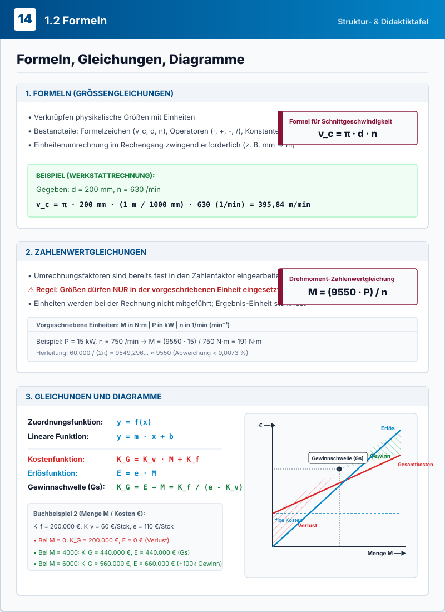

📘 Das mathematische Fundament der Metalltechnik (S. 14)
Kapitel 1.2 FormelnSeite 14 des Tabellenbuchs Metall legt die verbindlichen methodischen Grundlagen fest, wie in der Fertigung, Konstruktion und Betriebswirtschaft physikalische Größen berechnet, in Werkstatt-Formeln übertragen und grafisch interpretiert werden.
1. Größengleichungen
Physikalische Gesetzmäßigkeiten mit Formelzeichen, Operatoren und Konstanten ($\pi$). Die Einheiten werden mitgeführt und müssen konsequent umgerechnet werden.
2. Zahlenwertgleichungen
Formeln mit fest eingearbeiteten Umrechnungsfaktoren (z. B. $9550$). Zahlenwerte dürfen nur in der vorgeschriebenen Einheit eingesetzt werden!
3. Funktionen & Diagramme
Lineare Funktionen $y = m \cdot x + b$ zur Modellierung von Kosten, Erlösen und der Gewinnschwelle ($K_G = E$) im Koordinatensystem.
⚖️ Gegenüberstellung: Größengleichung vs. Zahlenwertgleichung
| Merkmal | Größengleichung (z. B. $v_c = \pi \cdot d \cdot n$) | Zahlenwertgleichung (z. B. $M = \frac{9550 \cdot P}{n}$) |
|---|---|---|
| Definition | Verknüpft physikalische Größen unabhängig vom Einheitensystem. | Verknüpft reine Zahlenwerte; Umrechnungsfaktoren sind eingearbeitet. |
| Einheiten im Rechengang | Müssen mitgeführt und umgeformt werden ($200\,\text{mm} \cdot \frac{1\,\text{m}}{1000\,\text{mm}}$). | Werden im Rechengang nicht mitgeführt. |
| Einheitendisziplin | Flexibel: Jede Einheit ist zulässig, sofern konsequent gekürzt wird. | Streng vorgeschrieben: z. B. $P$ in $\text{kW}$, $n$ in $1/\text{min}$, Ergebnis fest in $\text{N}\cdot\text{m}$. |
| Haupteinsatzgebiet | Wissenschaft, physikalische Herleitungen, Grundlagenprüfungen. | Werkstattpraxis, Schnellauslegung von Maschinen und Antrieben. |
⚙️ Schnittgeschwindigkeits-Rechner
🔄 Kinematische Werkzeug- & Zerspanungs-Simulation
Frage: Wie groß ist die Schnittgeschwindigkeit $v_c$ in $\text{m/min}$ für $d = 200\,\text{mm}$ und $n = 630/\text{min}$?
Einheiten-Regel: Vor oder während der Berechnung werden die Einheiten so umgeformt, dass der Rechengang möglich wird (hier: $200\,\text{mm} \cdot \frac{1\,\text{m}}{1000\,\text{mm}} = 0{,}2\,\text{m}$). Das Ergebnis ist immer ein Zahlenwert mit Einheit ($395{,}84\,\text{m/min}$).
⚡ Drehmoment-Zahlenwertgleichung
- Die Zahlenwerte der einzelnen Größen dürfen nur in der vorgeschriebenen Einheit verwendet werden.
- Die Einheiten werden bei der Berechnung nicht mitgeführt.
- Die Einheit der gesuchten Größe ist fest vorgegeben.
| Bezeichnung | Größe | Vorgeschriebene Einheit |
|---|---|---|
| $M$ | Drehmoment | $\text{N}\cdot\text{m}$ |
| $P$ | Leistung | $\text{kW}$ |
| $n$ | Drehzahl | $1/\text{min}$ ($\text{min}^{-1}$) |
📐 Motorkennlinie & Ursprung des Faktors 9550
🔬 Woher kommt eigentlich die Zahl 9550?
Ausgangspunkt ist die physikalische Größengleichung der Leistung bei Rotation:
Durch Runden auf 9550 entsteht im Tabellenbuch Metall eine extrem handliche Formel mit einem vernachlässigbaren Fehler von nur +0,0073%.
📈 Lineare Funktion & Steigungsdreieck
Wertetabelle (Beispiel 1: $y = 0{,}5 x + 1$):
| x (unabhängig) | -2 | 0 | 2 | 3 |
|---|---|---|---|---|
| y (abhängig) | 0 | 1 | 2 | 2,5 |
"Bei Funktionsgleichungen ist $y$ die Funktion von $x$, mit $x$ als unabhängige und $y$ als abhängige Variable. Die Zahlenpaare $(x, y)$ einer Wertetabelle bilden ein Diagramm im x-y-Koordinatensystem."
📐 Interaktives x-y-Koordinatensystem
Rot gestrichelt: Steigungsdreieck mit $\Delta x = 2$, $\Delta y = 1 \implies m = \frac{\Delta y}{\Delta x} = 0{,}5$. Roter Punkt: Achsenabschnitt $b = 1$.
💼 Kosten- und Erlösfunktion
📊 Diagramm: Kosten- und Erlöskurven
GEWINNZONEWertetabelle (wie Tabellenbuch Metall S. 14):
| Größe | M = 0 (Stillstand) | M = 4000 (Gewinnschwelle) | M = 6000 (Zielmenge) | M = Aktuell |
|---|---|---|---|---|
| Gesamtkosten $K_G$ | 200.000 € | 440.000 € | 560.000 € | 560.000 € |
| Erlös $E$ | 0 € | 440.000 € | 660.000 € | 660.000 € |
| Bilanz ($E - K_G$) | -200.000 € (Verlust) | 0 € (Schwelle) | +100.000 € (Gewinn) | +100.000 € |
🎓 Praxis- und Prüfungsaufgaben (6 Aufgaben)
Wende die Formeln, Einheitenumrechnungen und Zahlenwertgleichungen von Seite 14 auf reale Werkstatt- und Prüfungssituationen an.
📐 Didaktische Struktur- & Formeltafel (S. 14 Synopse)
Interaktive Hotspots aktivSystematische Vektor-Übersichtstafel der drei mathematischen Säulen von Kapitel 1.2: Klicke auf die markierten Bereiche, um direkt zu den interaktiven Berechnungsmodellen zu springen.
